Öffnen einer DXF- oder DWG-Datei. Die Dateiinhalte werden in das ISBCAD (*.AKT)-Format umgewandelt und können als solches gespeichert werden. Öffnet den Dialog Öffnen.
Unterschiede zwischen DXF/DWG-Import im Hauptmenü und im Zeichenprogramm:
Hauptmenü |
Zeichenprogramm |
|---|---|
·Sie können mehrere Dateien aus unterschiedlichen Ordnern umwandeln und anschließend einlesen ·Sie können den Modellbereich importieren ·Die Überprüfung des Faktors können Sie erst nach dem Einlesen der Zeichnung vornehmen Siehe: Das ISBCAD Hauptmenü |
·Sie können nur eine Zeichnung importieren ·Sie können entweder den Modellbereich oder ein Layout importieren ·Eine Vorschau ermöglicht Ihnen die Korrektur des Faktors, Wahl der Stifte und aller weiteren Parameter ·Sie können ein Musterprofil für den Import aus dem Hauptmenü erzeugen |
ISBCAD als Standardprogramm zum Öffnen von DWG/DXF-Dateien festlegen
Sie können DWG/DXF-Dateien mit ISBCAD verknüpfen, so dass bei einem Doppelklick auf eine DWG/DXF-Datei automatisch eine neue AKT-Zeichnung geöffnet und der Import-Dialog gestartet wird.
1.Suchen Sie auf Ihrem Rechner nach einer DWG- oder DXF-Datei.
2.Klicken Sie mit der rechten Maustaste auf die Datei.
3.Wählen Sie im Kontextmenü Öffnen mit.
4.Klicken Sie im Untermenü auf Andere App auswählen.
5.Aktivieren Sie das Kontrollkästchen Immer diese App zum Öffnen von .dwg-Dateien verwenden.
6.Wenn ISBCAD in der Liste Weitere Optionen und Weitere Apps nicht angezeigt wird, klicken Sie auf Andere App auf diesem PC suchen.
7.Navigieren Sie in den ISBCAD Installationsordner. Standardmäßig wird ISBCAD im folgenden Pfad installiert: C:\Program Files\Glaser Programmsysteme\-isb cad-\.
8.Öffnen Sie den Ordner -isb cad- und suchen Sie die Datei Zeichenprogramm.exe.
9.Klicken Sie die Datei an und klicken Sie anschließend auf Öffnen.
Datei auswählen und Einstellungen für die Konvertierung anpassen
§Wählen Sie im Dialog Öffnen eine Datei aus und klicken Sie auf Öffnen.
Der Dialog AutoCAD-Import wird geöffnet.
§Wählen Sie im Dialog AutoCAD-Import die gewünschten Einstellungen für den Import der AutoCAD-Datei aus und bestätigen Sie mit OK.
Siehe "AutoCAD-Import (Dialogbeschreibung)" weiter unten.
Wenn die DXF/DWG-Datei referenzierte Bilddateien enthält, werden diese ebenfalls importiert, wenn die Bilddateien mit der Originaldatei mitgeschickt wurden. Befinden sich die Bilddateien nicht im gleichen Ordner, oder sind sie gar nicht vorhanden, erscheint eine entsprechende Meldung.
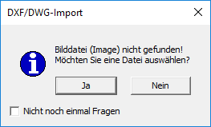 |
Klicken Sie in der Meldung auf Ja, wird ein Dateiauswahldialog geöffnet, in dem Sie den Suchort bestimmen können. Wenn Sie auf Nein klicken, wird die Bilddatei ignoriert. Bei vielen Bilddateien kann es sinnvoll sein, den Haken bei Nicht noch einmal Fragen zu setzen. Ansonsten wird die Meldung bei jedem fehlenden Bild aufgerufen.
§(Optional) Rufen Sie ggf. nach dem Import der Zeichnung mit der Schaltfläche Einstellung im Funktionsbereich den Dialog AutoCAD-Import erneut auf, um Änderungen an den Import-Einstellungen vorzunehmen. [Mit Einstellung zurück zur Dxf-Konfiguration].
Empfohlene Vorgehensweise für den Import von DWG/DXF-Dateien
Informationen zu einzelnen Zeichenelementen erhalten Sie über die Elementabfrage in der unteren Menüleiste.
» Elementeigenschaften anzeigen, [Untere Menüleiste | [?]].
Darstellungsfaktor prüfen
Kontrollieren Sie nach dem Import der Zeichnung als Erstes, ob der Faktor richtig gewählt wurde, indem Sie mit der Funktion Messen eine bekannte geometrische Formation (Wanddicke, Türöffnung, Achsabstand etc.) messen und diese in der erwarteten Größe angezeigt wird. Ist das der Fall, klicken Sie im Funktionsbereich auf Einstellung, um die weiteren Zuordnungen auf den einzelnen Registerkarten vorzunehmen. Stimmt das Messergebnis nicht mit dem erwarteten Ergebnis überein, müssen Sie den Faktor ändern. Bereiten Sie die Zeichnung erneut auf, um die Geometrie zu kontrollieren. » Messen
Maßstabskorrektur
DWG/DXF-Dateien können beim Import nur in einen Maßstab umgewandelt werden. Die Zeichenelemente behalten aber ihre ursprüngliche Größe, so dass es zu Fehlinterpretationen kommen kann. Verwenden Sie gegebenenfalls die Funktion Maßstabskorrektur, um ausgewählten Elementen einen anderen Maßstab zuzuweisen. » Maßstabskorrektur
Stiftverwendung
Die umgeformte Zeichnung dient als Voransicht für die Zuordnung der Stiftnummer zur Farbe. Sie sehen die Linien, wie sie mit den ISBCAD Stiften ausgeführt werden. Z. B. wird Farbe 3 in Stift 3 umgesetzt. Wenn damit dünne Linien gezeichnet sind, ändern Sie die Stiftnummer z. B. auf 1.
|
Tipps: |
|
·Bei Layer/Folien empfiehlt es sich, alle Layer in Folien zu übertragen, damit wichtige Planbestandteile nicht verloren gehen, weil sie in falschen Layern liegen. ·Wenn sich die Farben nicht eindeutig den Stiften zuordnen lassen, können Sie mit [Konst1 | FenÄnd → Attrib] versuchen, die richtigen Einstellungen zu finden. ·Die Folien lassen sich mit [Konst1 | Folien → An/Aus] untersuchen, um festzustellen, ob Elemente in falschen Folien liegen. ·Wenn alle Parameter richtig eingestellt sind, und mit dieser Einstellung weitere Dateien umgeformt werden können, sollten Sie die Konfiguration als Import-Profil speichern. Siehe Registerkarte [Import-Profile]. |

Situationsbeispiel
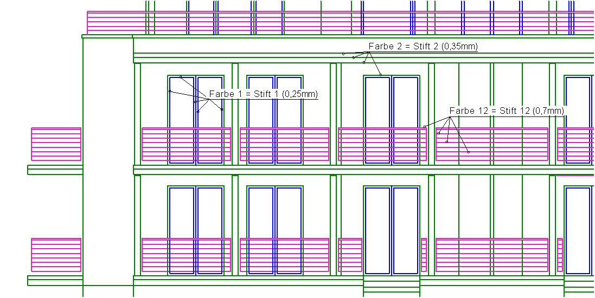 |
Die Stifte 1 und 2 können übernommen werden. Die Linien mit Stift 12 werden zu dick und sollten z. B. in Stift 7 (0,18mm) geändert werden. |
Optionen im Dialog "AutoCAD-Import"
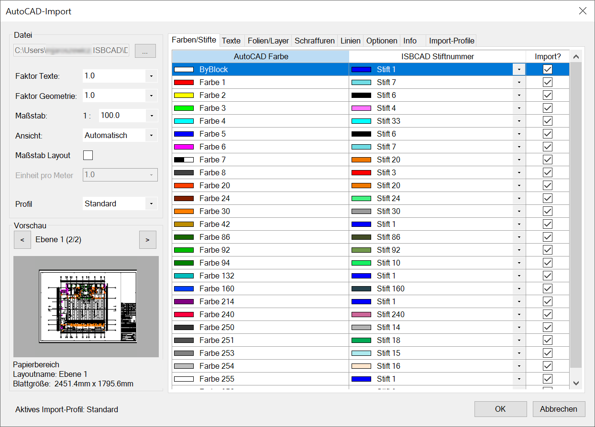 |
Allgemeines zur Auswahl von Tabellenzeilen auf den Registerkarten
Auswahlmöglichkeiten
Einzeln markieren |
Strg + linke Maustaste |
Alle markieren |
Strg + A |
Im Block markieren |
Klicken Sie die erste Tabellenzeile an, die markiert werden soll und anschließend, bei gedrückter Umschalt-Taste, die letzte Tabellenzeile. Alle Tabelleneinträge, die sich zwischen den angeklickten Einträgen befinden, werden markiert. |
Wählen Sie anschließend aus einer der Dropdown-Listen [ ] die gewünschte Eigenschaft aus, die für alle gewählten Einträge übernommen werden soll.
] die gewünschte Eigenschaft aus, die für alle gewählten Einträge übernommen werden soll.
[Import?] Importieren oder vom Import ausschließen? Setzen Sie einen Haken  , wenn der Eintrag konvertiert werden soll.
, wenn der Eintrag konvertiert werden soll.
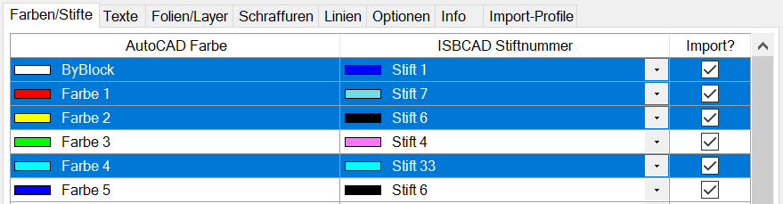
Datei
Angaben zu Geometrie und Maßstab der zu importierenden Datei.
Faktor Texte
Ändern Sie diesen Wert nur bei Bedarf.
Faktor Geometrie
Stellen Sie den Wert für die Umrechnung ein. Die Geometrie wird mit dem eingestellten Faktor dargestellt.
Siehe: Empfohlene Vorgehensweise für den Import von DWG-Dateien
Maßstab
Wählen Sie einen globalen Maßstab für die Darstellung der Zeichnung in ISBCAD. Alle Elemente der Zeichnung werden in diesem Maßstab gezeichnet.
Ansicht
Wählen Sie die Zeichnungsperspektive.
Maßstab Layout
Nur verfügbar, wenn im Modellbereich (s. unten) ein Papierbereich (Layout) gewählt worden ist.
Setzen Sie hier einen Haken, wenn der Maßstab aus dem Papierbereich übernommen werden soll. Die einzelnen Anzeigefenster (Views) behalten ihren ursprünglichen Maßstab bei. Nach dem Import können Sie sich die in der Zeichnung enthaltenen Views mit [Konst1 | MaßKor → Info] anzeigen lassen.
Nur verfügbar, wenn bei Maßstab Layout ein Haken gesetzt ist.
Wählen Sie hier eine Zeicheneinheit aus, die einem Meter entsprechen soll. Sie können auch einen eigenen Wert eintippen.
|
Anmerkung: |
|
AutoCAD arbeitet im Koordinatensystem grundsätzlich dimensionslos mit Zeicheneinheiten (ZE). Dies bedeutet, dass in der Zeichnung keine Längeneinheiten verwendet werden; es wird immer im Maßstab 1:1, also in der Originalgröße, gezeichnet. Dabei wird vorher festgelegt, in welchem 1:1 Maßstab gezeichnet wird, z. B. 1 ZE = 1mm oder 1 ZE = 1m. Beispiel: Eine Zeichnung wird im Modellbereich im Maßstab 1:1 gezeichnet. Im Papierbereich (Layout) wird der Ausgabemaßstab auf 1:100 gesetzt und als Zeicheneinheit Meter [m] angegeben. In diesem Fall entspricht bei einem Ausgabemaßstab von 1:100 eine Länge von 1m in der Realität genau 10mm auf dem Papier. Somit ist in jeder Zeicheneinheit 1m = 10mm lang. |
Profil
Wählen Sie ein Import-Profil.
Aktives Import-Profil
Zeigt das aktuelle Import-Profil an.
Vorschau
Im Voransichtsbereich können Sie zwischen dem Modellbereich und den Layouts wählen. Darunter werden nähere Angaben zur gewählten Datei gemacht.
Hier wählen Sie, welches Layout importiert werden soll.
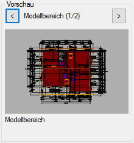 |
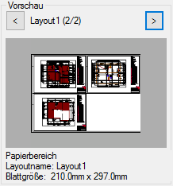 |
Modell |
Layout |
Vor- und Zurückblättern der verschiedenen Ebenen. Das gewählte Layout wird importiert.

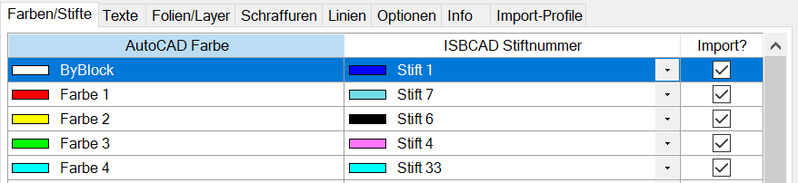 Das Programm schlägt die Stiftnummer anhand der AutoCAD-Farbe automatisch vor. Ab Farbe 33 wird immer Stift 1 vorgeschlagen. AutoCAD Farbe Es werden aus allen gewählten Dateien die gefundenen Farbnummern angeboten. ISBCAD Stiftnummer Ändern Sie die Stiftnummer so, dass in den ISBCAD Zeichnungen die Ñrichtigenì Strichbreiten erzeugt werden. Wenn Sie ein vorhandenes Import-Profil benutzen, sind die Einstellungen schon von Ihnen vorgenommen worden. Änderungen sind dann erforderlich, wenn zusätzliche Farbnummern gefunden werden. |
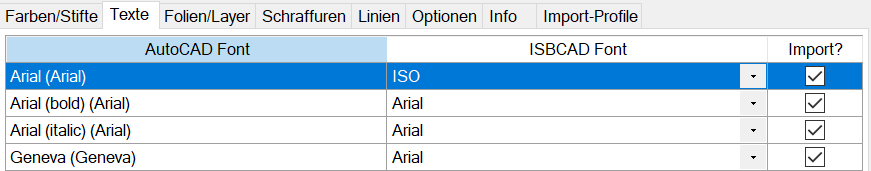 AutoCAD Font In der Tabelle werden die in den Zeichnungen benutzten Schriftarten angezeigt. ISBCAD Font Wählen Sie die gewünschten Schriftarten aus. |
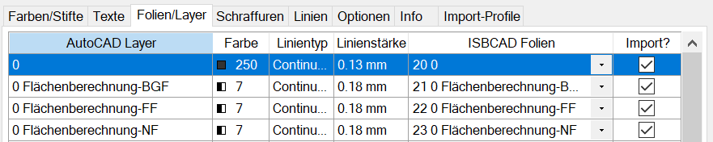 AutoCAD Layer Die Liste enthält die Layer aus allen Dateien. Farbe Zur Information wird die dem Layer zugeordnete Farbe angezeigt. Linientyp Der dem Layer zugewiesene Linientyp wird angezeigt. Linienstärke Die im Layer verwendete Linienstärke wird angezeigt. ISBCAD Folien Die Layer werden automatisch, bei Namensgleichheit, entsprechenden Folien zugeordnet. Zum Ändern klicken Sie auf die gewünschte Zeile, diese wird markiert und das Feld für ISBCAD Folien wird zum Auswahl- und Eingabefeld. Tragen Sie hier den Namen der neuen Folie ein, eine freie Foliennummer wird automatisch vergeben. |
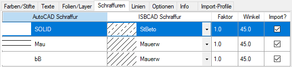 AutoCAD Schraffur Alle Schraffuren aus allen Zeichnungen werden erfasst. ISBCAD Schraffur Zuordnung einer ISBCAD Schraffur. Damit die Zuordnung übernommen wird, setzen Sie auf der Registerkarte Optionen einen Haken bei ISBCAD Schraffur aus Zuordnungstabelle. Faktor Damit die Schraffur zur Geometrie passt, können Sie hier einen Faktor eingeben oder auswählen. Winkel Angabe des Schraffurwinkels für die ISBCAD Schraffur. Klicken Sie in die Zelle und wählen Sie einen Winkel aus. Geben Sie alternativ einen positiven oder negativen Winkel ein. |
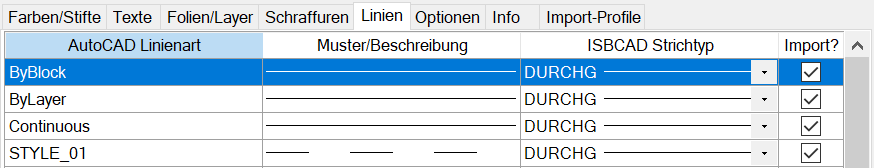 AutoCAD Linienart Gefundene Linien, alphabetisch sortiert. Muster/Beschreibung Wenn für Linienarten Beschreibungen und/oder Muster vorliegen, werden diese hier aufgeführt. ISBCAD Strichtyp Wenn keine Übereinstimmung zwischen den AutoCAD-Namen und den ISBCAD Namen besteht, wird vom Programm der erste Strichtyp DURCHG vorgeschlagen. |
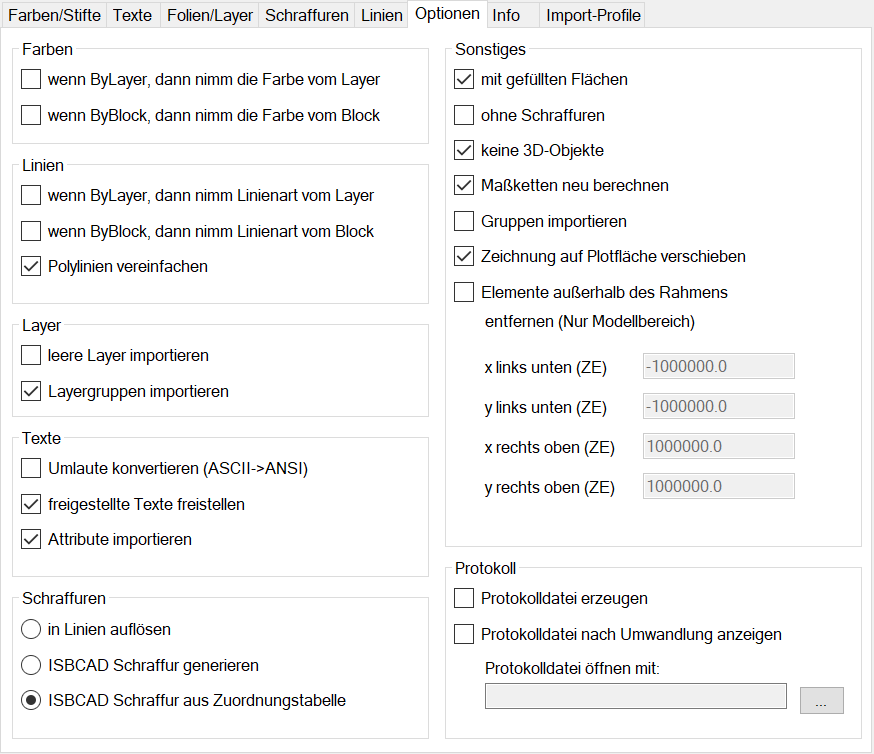 Setzen Sie einen Haken þ bei den Optionen, die beim Importieren berücksichtigt werden sollen.Farben ByLayer Farben vom Layer übernehmen? ByBlock Farben vom Block übernehmen? Linien ByLayer Strichtyp vom Layer übernehmen? ByBlock Strichtyp vom Block übernehmen? Layer Leere Layer importieren Es werden alle Folien angelegt. Damit besteht die Möglichkeit, diese bei der weiteren Bearbeitung zu benutzen. Layergruppen importieren Wenn in den Import-Dateien Layergruppen gefunden werden, werden diese als Foliengruppen in den ISBCAD Zeichnungen übernommen. Texte Umlaute konvertieren (ASCII->ANSI) Bei älteren DXF/DWG-Dateien werden die Umlaute nicht richtig konvertiert. Dazu muss hier der Haken gesetzt sein. Freigestellte Texte freistellen Wenn freigestellte Texte vorhanden sind, werden die Texte ebenfalls in der ISBCAD Zeichnung freigestellt. Attribute importieren Attribute sind spezielle Texte bei eingefügten Blöcken, ähnlich der Makrotexte in ISBCAD. Schraffuren Die Schraffuroptionen sind nur aktiv, wenn im Dialogbereich Sonstiges (siehe weiter unten) kein Haken für ohne Schraffur gesetzt ist! In Linien auflösen Die Schraffurlinien werden als einzelne Linien übernommen. ISBCAD Schraffur generieren Es wird versucht, aus den gefundenen Schraffuren neue ISBCAD Schraffuren zu erzeugen. Während der Umformung erscheint eine Meldung, aus der Sie den Speicherort der neuen Schraffuren entnehmen können. Sie können diese dann mit [Konst1 | Schraff → Winkel o. Faktor → Einfügen] in Ihre Schraff.dat übernehmen. ISBCAD Schraffur aus Zuordnungstabelle Es wird die Schraffurzuordnung von der Registerkarte Schraffuren übernommen. Sonstiges Mit gefüllten Flächen Es können die gefüllten Flächen übernommen werden. ohne Schraffuren Setzen Sie hier einen Haken, wenn Schraffuren nicht importiert werden sollen. Wenn hier kein Haken gesetzt ist, werden die Optionen für Schraffuren aktiv. So wie dort eingestellt, werden die Schraffuren in die ISBCAD Zeichnung umgesetzt. Keine 3D-Objekte Die Originaldateien können 3D-Objekte enthalten. Hier können Sie bestimmen, ob diese Objekte mit in die Zeichnung übernommen werden sollen. Maßketten neu berechnen Die Maßketten werden vor dem Speichern geprüft und ggf. korrigiert. Gruppen importieren Die in der AutoCAD-Datei definierten Gruppen werden importiert und können im Gruppenmanager eingesehen und bearbeitet werden. Wenn die importierten Gruppen keine Zeichenelemente enthalten, werden nur die Gruppennamen angezeigt. Zeichnung auf Plotfläche verschieben Die Plotfläche passt sich an die importierte AutoCAD-Zeichnung an. Elemente außerhalb des Rahmens entfernen (Nur Modellbereich) Sie können einen Bereich definieren, der den zu übernehmenden Zeichnungsteil beinhaltet. Damit kann verhindert werden, dass eine scheinbar Ñleereì Zeichnung entsteht, in der die Geometrie ganz klein unten links und ein Punkt oben rechts liegt. Wenn Sie den Haken in die Checkbox setzen, werden die Eingabefelder für die Koordinaten aktiviert. (ZE = Zeicheneinheit) Protokoll Protokolldatei erzeugen Falls es beim Umformen der Zeichnung zu Fehlern kommt, werden diese in der Protokolldatei festgehalten. Protokolldatei nach Umformung anzeigen Im Falle, dass eine Protokolldatei geschrieben wird, kann sie sofort angezeigt werden. Protokoll-Datei öffnen mit Hier können Sie das Programm wählen, mit dem die Protokolldatei geöffnet werden soll. |
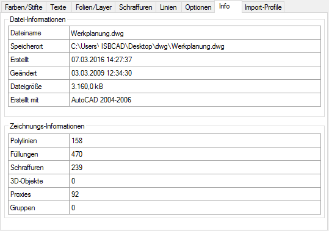 Datei-Informationen Allgemeine Informationen über die zu importierende Zeichnung. Zeichnungs-Informationen Polylinien Zeigt die Anzahl der Polylinien. Füllungen Zeigt die Anzahl der Füllungen. Schraffuren Zeigt die Anzahl der Schraffuren. 3D-Objekte Zeigt die Anzahl der 3D-Objekte. Proxies Zeigt die Proxy-Elemente an. Gruppen Zeigt die Anzahl der enthaltenen Gruppen an. |
Verfügbare Import-Profile Anlegen, Löschen und Bearbeiten von Import-Profilen. Die Import-Profile werden im aktiven ISBCAD Profil gespeichert. Das aktuell eingestellte Import-Profil wird Ihnen im linken unteren Dialogbereich unter der Vorschau angezeigt. Um ein Import-Profil zu aktivieren, klappen Sie die Dropdown-Liste auf und klicken Sie das entsprechende Profil an. Alternativ können Sie auch ein Profil in der Tabelle unter Profilname: anklicken und anschließend mit Profil aktivieren übernehmen.
Profilname Geben Sie dem Profil einen aussagekräftigen Namen. Kommentar Beliebiger Text zur Beschreibung des Import-Profils.
|


Zugehörige Referenzen: